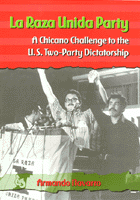

A comprehensive study of an ethnic political movement
A comprehensive study of an ethnic political movement


 A comprehensive study of an ethnic political movement
A comprehensive study of an ethnic political movement

|  |
La Raza Unida PartyA Chicano Challenge to the U.S. Two-Party DictatorshipArmando Navarropaper EAN: 978-1-56639-771-1 (ISBN: 1-56639-771-5) |
"Armando Navarro, in a scholarly and lucid narrative, has brilliantly located the place of La Raza Unida Party in both Chicano and U.S. history."
—Mario T. Garcia, author of Memories of Chicano History: The Life and Narrative of Bert Corona and Mexican Americans: Leadership, Ideology and Identity
Over the years, third parties have arisen sporadically to challenge the hegemony of the United States' two major political parties. But not until the emergence of the Raza Unida Party (RUP) in 1970 did an ethnic group organize to fight for political control at the country's ballot boxes. This book, by noted Chicano movement theorist Armando Navarro, is the most comprehensive study of the party ever put together.
La Raza Unida Party traces the party from its beginnings in 1970 to its demise in 1981—the events, leaders, ideology, structure, strategy and tactics, successes and problems, and electoral campaigns that marked its trajectory. The book covers political organizing in California, Texas, Colorado, New Mexico, Arizona, and the Midwest, as well as RUP's national and international politics and its party profile. In addition, it suggests options for future political action. Based on 161 interviews, access to numerous documents, letters, minutes, diaries, and position papers, as well as such published sources as contemporary newspaper and magazine accounts and campaign literature, the study is enriched by Professor Navarro's accounts of his own experiences as one of the organizers of the RUP in California.
La Raza Unida Party represents the culmination of the story of Chicano militancy that Professor Navarro has related in his earlier books. It goes beyond mere history-telling to discuss the strengths and weaknesses of ethnic-identity political parties and the perils of challenging the two-party dictatorship that characterizes U.S. electoral politics.
"This superbly researched study of La Raza Unida Party clearly demonstrates how and why the idealistic Chicano generation rejected 'politics as usual' to help their raza. In recounting the story of one of the most significant American political alternatives in the twentieth century, Narvarro succeeds in the difficult task of blending passion with objectivity."
—F. Arturo Rosales, Professor of History, Arizona State University
"Armando Navarro's work provides us with the definitive study of La Raza Unida Party. His impressive and comprehensive historical analysis of this important American third party combines the insights of the participant observer with the research methodologies and theoretical context of the trained scholar."
—Mario Barrera, Professor Emeritus, Department of Ethnic Studies, University of California, Berkeley, and author of Race and Class in the Southwest
Read a review from The Journal of American Ethnic History, Winter 2002, written by Mary Pardo (pdf).
Preface
Acknowledgments
Introduction: Third-Party Movements: A Theoretical and Historical Framework
1. Catalyst for Empowerment: The Rise of RUP in Texas, 1960
2. RUP's Expansion Statewide: The Beginning of the End, 1971-1974
3. Victim of the Politics of Self-Destruction: The Decline of RUP in Texas, 1975-1978
4. A Cadre Party of Ultranationalism: The Rise and Fall of RUP in Colorado, 1970-1976
5. The Cucamonga Experiment: The Precursor of RUP in California, 1968-1973
6. A Partido of Clashing Caciques and Ideologies: The Rise of RUP in California, 1971-1972
7. A Causality of the Viva Yo Generation: The Decline of RUP in California, 1973-1981
8. A Vehicle for Self-Determination: The Rise and Fall of RUP in New Mexico, 1971-1984
9. Instrument of Change and Service: The Rise and Fall of RUP in Arizona, 1971-1974
10. Pressure Group, Service Provider, or Partido? The Rise and Fall of RUP in the Midwest and Utah, 1972-1976
11. Rationale for Expansion: RUP's National and International Politics
12. Profile of a Chicano Partido: The Unfinished Partido Experiment
Epilogue: Prospectus for a New Partido and Movement
Notes
Index
 | Armando Navarro is Professor and Chair of the Department of Ethnic Studies at the University of California, Riverside. He is the author of Mexican American Youth Organization: Avant-Garde of the Chicano Movement in Texas and The Cristal Experiment: A Chicano Struggle for Community Control. |
Political Science and Public Policy
Latino/a Studies
© 2015 Temple University. All Rights Reserved. This page: http://www.temple.edu/tempress/titles/1536_reg.html.